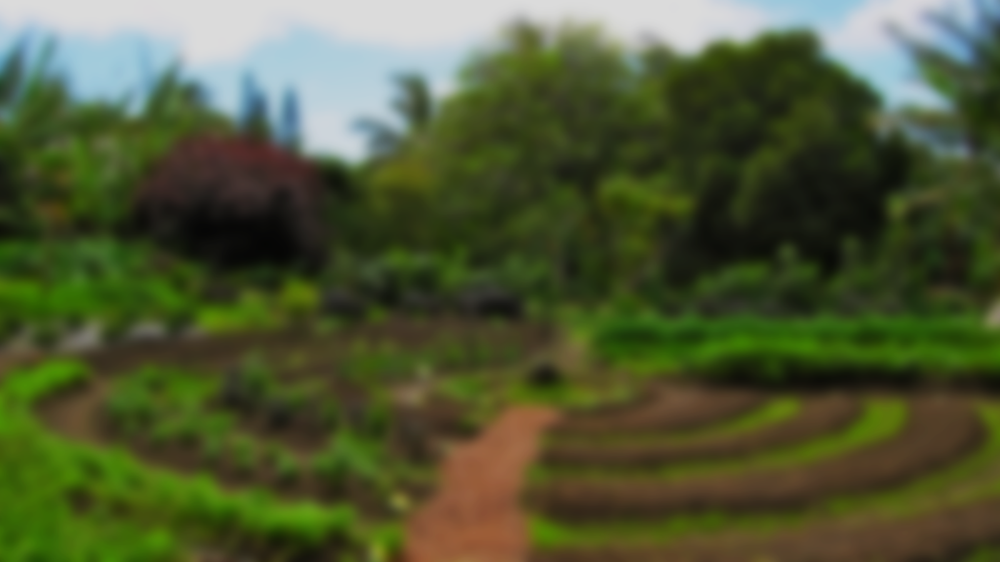
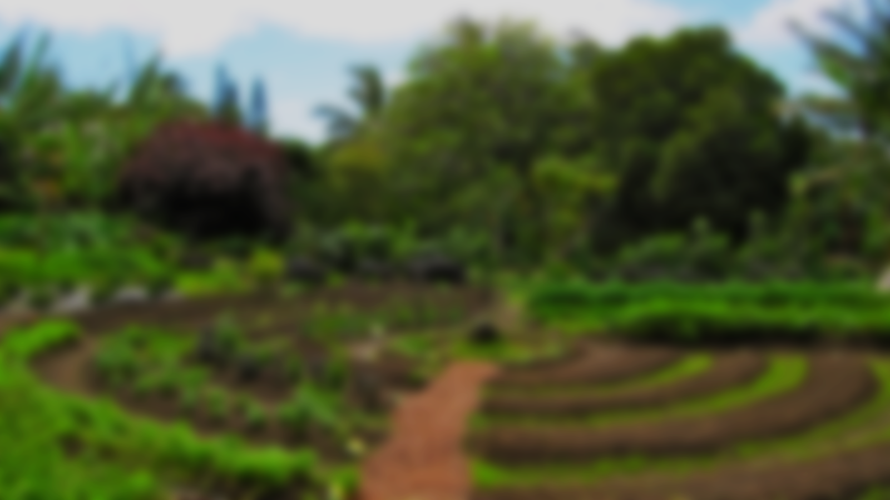

Chaac prototype
Watering
- Area A watered 2 hours ago
(832L total) - Area B watered 8 days ago
(442L total) - Area C watered 2 days ago
(666L total)
Counter
- 0L/s currently
1337L total
Lights
- Light 1 is off
- Light 2 is on
since 10 min
Pump
- Currently inactive
Since 2 hours
History
- Switch on light 2 (10 min ago)
- 200L on area A (2 hours ago)
- 150L on area C (2 days ago)
Pending
- Watering 30L on area B (ETA 1min)
- Watering 60L on area C (ETA 3min)